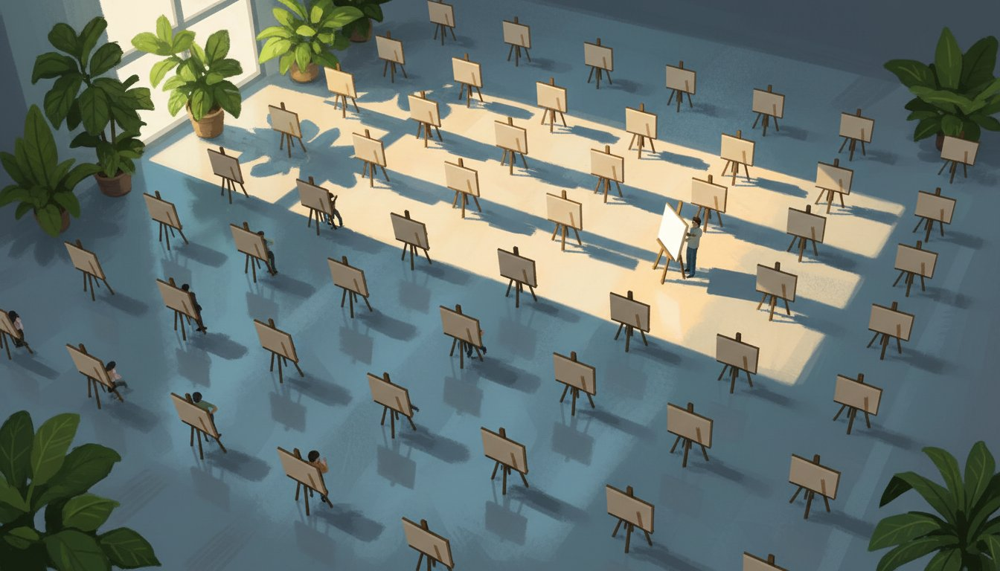

Anyone Can Make It Now
Every creative team now has the same production pipeline that used to cost millions. Most have used it to produce more of the same thing, faster. The brands winning now did something different with it.
 Nadim A. Massih3 June 2026 · 14 min read
Nadim A. Massih3 June 2026 · 14 min read
What the Pipeline Actually Looks Like
Google Flow was not the starting gun. It was the confirmation.
The pipeline now fits in one window. In March 2026, ElevenLabs (a voice and creative AI platform used by 41 per cent of the Fortune 500 (ElevenLabs, 2026)) launched Flows: a single canvas connecting script, footage, voice, music, and distribution, without a single external hire. These launches were months apart. The capability gap that once separated a marketing team from a broadcast production facility had already closed.
Three years ago, a brand producing a 30-second video advertisement needed a creative brief, an agency, a production company, a shoot day, a post-production house, a sound designer, and a music licensing deal. Timeline: eight to twelve weeks. Budget: five figures minimum, climbing quickly.
Today, a marketing team at a mid-sized company can move from brief to published video in under a working day. The 2026 production stack looks like this.
Script. ChatGPT (OpenAI’s AI writing assistant) or Claude (Anthropic’s AI assistant) writes a first draft from a brief. Tone, length, platform format: all specified in the prompt. Turnaround: under a minute.
Images and storyboard. Midjourney v7 (from a San Francisco AI company of the same name) creates cinematic concept frames and editorial illustrations, the standard for artistic, mood-driven imagery. Flux 1.1 Pro (from Black Forest Labs, a German AI research company) leads on photorealism, producing images that look like actual photographs rather than generated artwork. For any image requiring readable text inside it (a poster, a product label, a social card), Ideogram v3 (from a New York AI company) is the specialist. It is the only major image tool that reliably renders legible typography; every other model still produces distorted or misspelled text.
Video. Google’s Veo 3.1 (Google’s AI video generation tool) produces broadcast-quality video clips from text descriptions, generating dialogue, ambient sound, and music in a single pass. It is the only major AI video tool that creates audio natively alongside footage without a separate step. Runway Gen-4.5 (from Runway, a New York AI company) is the professional alternative for work requiring precise creative control, consistent characters across multiple scenes, and post-generation editing. Seedance 2.0 (from ByteDance, the Chinese technology company behind TikTok) accepts text, images, video, and audio together as input (up to twelve assets simultaneously) and produces multi-shot, cinema-quality video with native audio sync and frame-level character consistency. Its April 2026 API launch made it directly accessible to brand production teams at scale. One notable absence from this list: Sora, OpenAI’s video generator, was shut down in April 2026. Per industry analysis, the product was generating significant operating losses against minimal revenue.
Voice. ElevenLabs generates voiceovers in more than 70 languages from text input. Voice cloning is available for brands that have established audio identities. Their technology is now embedded in IBM’s enterprise AI systems.
Music. Suno v5 (an AI music generation platform) creates complete original tracks with vocals, instruments, and lyrics from a text description, in seconds. Following Suno’s November 2025 settlement with Warner Music Group (one of the three largest recorded-music companies in the world), paid subscribers hold commercial rights, though as explained in §04, the legal picture is more complicated than that agreement suggests. Udio (another AI music generation platform) settled similarly with Universal Music Group (the world’s largest recorded-music company) in October 2025.
Assembly. ElevenLabs Flows, launched March 2026, connects all of the above in a single visual workspace: image generation, video, voice, music, and sound effects linked together in a pipeline. Non-destructive: change the voiceover without rerunning the video generation. The entire sequence can be triggered from a brand team’s form submission.
Distribution-ready design. Canva AI 2.0 reads your brand’s colour palette, fonts, and logo rules before generating anything. It has Google’s Veo 3 embedded directly for video, and outputs social-ready assets in every required format simultaneously.
That is the 2026 creative production stack: the generation layer. The tools that create the content.
There is a second layer that most brands discover only after they start producing at scale. It is the orchestration layer: the pipeline that takes a brief at one end and delivers a finished, distributed asset at the other, without a human copying files between applications.
The production ceiling collapsed. The volume ceiling disappeared with it. (APR, 2026)


APR (an advertising production consultancy that advises more than 70 global brands) named the scale of the shift plainly in March 2026: “the biggest restructuring of the agency and production world since the 1990s.” They identified three tracks that brands now run simultaneously.
Craft: high-touch artistry for hero content and long-form branded work. Human-led, AI-assisted. This is where premium shoots still happen, but once, with AI handling global versioning.
Maker: nimble, social-first content for rapid-turnaround engagement. A small team, running the stack, producing at volume for specific platforms and moments.
Content Engine: fully automated, globally versioned output at scale. One master asset. AI generates every market variant (language, imagery, format, local pricing, regional cultural context) without a human touching the downstream production.
The Content Engine requires no external agency. It runs on the stack above, available to any brand that can afford a set of software subscriptions.
“The biggest restructuring of the agency and production world since the 1990s.”
Every Brand Is a Studio Now
Unilever (the consumer goods company behind Dove, Lynx, and Hellmann’s) runs 18 AI creative studios across 18 markets. A brief goes in. Campaign-ready video assets (in local languages, featuring the product, formatted for every platform) come out. No production company booked. No crew scheduled. No shoot. The system uses 3D digital models of each product, known as digital twins, to generate the imagery. Since deployment: creative assets produced 30 per cent faster. Video completion rate doubled. Click-through rate doubled. A parallel system called Sketch Pro, built with IPG Studios (the production arm of Interpublic Group), delivers testable assets in two hours at three times the previous production speed. Scaling to 21 markets by the end of 2026 (Digiday, 2026).
This is not exceptional. It is now the direction of travel.
82 per cent of members of the Association of National Advertisers (the main US industry body for major brands) now operate an in-house agency, up from 78 per cent in 2018 (ANA In-House Agency Survey, 2024). 60 per cent of US senior marketing leaders told Forrester Research (a global market research firm) in 2025 they spent less on external agencies as a direct result of AI. Forrester projects a 15 per cent job reduction across agencies in 2026, following 8 per cent cuts in 2025.
The numbers at the holding-company level tell the story directly.
WPP (one of the world’s largest advertising networks, owning agencies including Ogilvy and Grey) cut close to 10,000 jobs in a single year. Its “Elevate28” restructuring programme targets £500 million in annual savings by 2028 (WPP SEC Filing, 2025).
Omnicom (another major global advertising group), following its $13 billion acquisition of IPG (Interpublic Group, also one of the world’s largest advertising companies), announced more than 4,000 job cuts and doubled its cost-saving target to $1.5 billion over 30 months. Iconic agency names were retired (Campaign Asia, 2026).
Nike built Nike Icon Studios in Culver City, Los Angeles: a single facility consolidating every global brand pre-production and post-production function under one roof. Not an external agency. A production house owned by Nike.
For a mid-sized brand, the equivalent is a small internal team running ElevenLabs Flows, Midjourney, Runway, and Canva AI, producing monthly content volumes that would previously have required a full-service agency retainer.
Every brand is a production house now. The question is what they are producing.
When Everyone Has the Same Pipeline
What happens when everyone has the same pipeline is not obvious until the feeds fill up.
McDonald’s Netherlands released its 2025 Christmas advertisement using generative video tools. It was pulled within days. Viewers described it as “AI slop”, the term internet users coined for AI-generated content characterised by warped movement, uncanny expressions, and a synthetic quality that is difficult to name but impossible to ignore. Comments said it “ruined Christmas spirits.” Tom Williams, global creative director at Incubeta (a digital growth agency): “It seemed to lack intent. The whole thing gave off Uncanny Valley vibes.” Valentino (the luxury fashion house), Skechers, Colgate, Samsung, and Burger King received similar audience backlash for AI imagery during the same period.
iHeartMedia (one of the largest radio and digital audio companies in the United States) launched a “guaranteed human” tagline after its own research found 90 per cent of listeners wanted their media made by people, not machines (iHeartMedia, 2025).
The Journal of Business Research (a peer-reviewed academic journal) confirmed in 2025: when consumers believe marketing communications are AI-written, they judge the content as less authentic, feel moral disgust, and show weaker engagement and weaker purchase intentions, even when the content is otherwise identical to human-made equivalents.
Europol (the European Union’s law enforcement agency) projected that 90 per cent of online content may be synthetically generated by 2026. Not bad content. Just content. Indistinguishable in volume, similar in texture, arriving from every brand simultaneously.
AI is a homogeneity engine. It produces what is statistically most likely. When every marketing team uses the same tools trained on the same data, output converges. The feeds fill up.
Having the pipeline is not the competitive advantage. It is the floor.
There is a second problem most brands running this pipeline have not yet found. It is quieter than the slop problem. It is, in some ways, more dangerous.
“When every marketing team uses the same tools trained on the same data, output converges. The feeds fill up.”
You Own Nothing
Most brands running an AI pipeline have not read the licence clause that matters most.
In January 2025, the United States Copyright Office published the second part of its Artificial Intelligence and Copyright Report. The finding: writing a prompt into a generative AI tool does not make you the author of the output. Prompts are instructions, not expressions of creativity. The Supreme Court declined to hear the appeal in Thaler v. Perlmutter (the landmark AI authorship case) in 2026, leaving the lower court ruling in place. The rule stands: only human beings can hold copyright authorship in the United States.
This has a direct and serious consequence for every brand running an AI creative pipeline.
If a marketing team generates a campaign image in Midjourney, a video in Runway, and a voiceover in ElevenLabs, and no human substantially edited or modified the output, those assets are not copyrightable. They enter the public domain. A competitor can use them. A stock agency can sell them. Anyone can copy them freely, and legally.
The tools themselves offer very different levels of protection.
IP protection by AI creative tool. (US Copyright Office, January 2025; Adobe, 2026)
Midjourney tells paying subscribers they “own” what they create commercially. But intellectual property lawyers have identified the gap: if the law does not recognise AI-generated output as copyrightable, Midjourney cannot grant a copyright it does not have. What it is actually offering is a promise not to assert its own rights against the user. There is no legal protection standing between a Midjourney-generated brand asset and a copyright claim.
Adobe Firefly (Adobe’s AI creative toolset, part of Creative Cloud) is the meaningful exception. Its training data was sourced from Adobe Stock (a library of commercially licensed images), alongside public domain content. Adobe explicitly guarantees commercial safety on Firefly outputs, and includes IP protection, meaning if someone sues you claiming your Firefly output infringes their copyright, Adobe will cover your legal defence costs up to $10,000 per claim for paid subscribers. It is the only major AI image tool with contractual legal protection built in.
Suno (the AI music generation platform) technically retains authorship even for paid subscribers. Subscribers receive a commercial use licence. Not ownership. The music in last quarter’s campaign belongs, in a legal sense, to Suno.
The practical exposure is real. Brands are building creative libraries (social assets, campaign images, advertising videos, product photography) using AI tools without documenting the human creative decisions that would establish copyright. Those libraries may contain no legally protected intellectual property at all.
Reinvent IP (an intellectual property law advisory firm), in a March 2026 briefing for agencies, identified this directly: “the content created with AI tools might not actually belong to the organisation.”
The remedy is not to stop using AI. It is to document the process. The Copyright Office’s guidance: copyright protection applies where a human makes specific, substantial creative choices: editing, selecting, arranging, modifying in ways that express genuine creative judgment. Brands need to build what practitioners now call a Creative Audit Trail: a documented record of the human decisions that converted AI-generated output into a protected brand asset. Which elements were generated. Which were edited or restructured by a human. What creative choices were made during that process.
Disney, Universal, and DreamWorks filed a federal lawsuit against Midjourney in June 2025, alleging the platform functions as a “virtual vending machine, generating endless unauthorised copies” of copyrighted characters. Midjourney filed a fair use defence, arguing that training an AI on existing images is comparable to a human artist learning from existing work, not directly copying it. The case is ongoing. Its outcome will shape what brands are permitted to build with AI creative tools, and what they legally own when they do.
Any brand building significant creative output with AI tools should be having this conversation with legal counsel now, not next quarter.
The legal question and the competitive question are not separate. Both reduce to the same thing: whether any human being in the building made a real decision about what the brand is saying. A Creative Audit Trail protects the asset legally. A clear brief protects it commercially. The work is the same work.
No Creative Audit Trail = no copyright. A brand that generates 500 social assets a month using AI, with a human only reviewing and approving each one, may have built a creative library containing zero legally protected intellectual property. Those assets are freely copyable by anyone, including direct competitors.
Adobe Firefly is the only major AI image tool with contractual IP protection. For brand-critical assets where copyright matters, it is the only tool in the 2026 stack that includes a legal guarantee. The $10,000-per-claim defence cover for paid subscribers is not symbolic. It is the gap between the tool that hands you a liability and the tool that shares it.
The Taste Gap
The pipeline is shared. The legal exposure is shared. The tools are identical. What is not shared is the judgment about what to make.
When production costs approach zero and the tools are available to every competitor, the resource that becomes scarce is the one the tools cannot supply: judgment about what to make, for whom, and why.
The VC Corner (a venture capital and technology newsletter), in an April 2026 analysis of what differentiates companies in the AI era, put it plainly: “When everyone has the same jet engine, speed is no longer a moat.” Rex Woodbury (a technology analyst and writer) called the current moment the “Costco era of software”: mass-produced, instantly forgettable output that looks like everything else because it came from the same engine as everything else.
Production skill still matters. The brands getting the best results from Runway and Veo 3 are not the ones who opened the tool for the first time this week. There is real expertise in building consistent characters, writing prompts that hold brand voice, and understanding which model does what. That expertise has value. But it has a ceiling. Because the expertise is learnable, and the tools are available to anyone willing to learn them. Production mastery is not the final differentiator; it is a cost of entry.
The brands solving this are not using different tools. They are making different decisions before they open the tools.
Heinz (the food brand known globally for its ketchup) ran a campaign using DALL-E 2 (an AI image generator from OpenAI) prompted with phrases like “ketchup in outer space.” Then it invited consumers to generate and submit their own AI ketchup artwork, displayed in a digital gallery and on physical advertising such as billboards and posters. The campaign generated over 1.15 billion earned impressions, with social engagement 38% higher than Heinz’s previous campaigns (Heinz/Rethink, 2022). Heinz did not use AI to make an advertisement. It used AI to make an invitation. The tool was the same as every other brand’s. The judgment about what to do with the tool was not.
Coca-Cola’s Islam ElDessouky, global vice president for creative strategy and content, described the internal reality after the 2025 AI holiday campaign: “The masses, the audiences, do not necessarily look behind the technology. They just look at the story that they’re receiving.” By Coca-Cola’s own testing metrics, the AI-generated advertisement was one of the best-performing in the brand’s history. The online backlash came from people who noticed how it was made. General audiences responded to what it said.
The gap is not between brands with AI and brands without. It is between brands that know what they are saying and brands that are simply producing.
What taste actually is, how it is built, and what it means for creative strategy gets its full treatment in a separate piece. Here, the argument is narrower: direction precedes production. The brief is the competitive asset. The tools are not.
“When everyone has the same jet engine, speed is no longer a moat.”
The Brief Is the Product
The diagnosis is clear. What the new job looks like is different from the old one in every layer that matters.
The brief (the specific human argument about what a piece of content should make an audience feel, and why) is where the work is now. Not in execution. Execution is automated. The brief is where competitive advantage begins, where intellectual property can be established through documented human creative decisions, and where brand identity is either held or surrendered to the algorithm.
The New York Times, in a June 2025 analysis of creative work in the AI era, described the shift: writers becoming “article designers,” “story designers” emerging as a distinct role in film and television, “world designers” shaping marketing and gaming. The paper summarised: “More people will be tasked with making creative and taste decisions, steering the AI where they want it to go.”
That is the new job. Not making. Steering.
APR (Advertising Production Resources, the US industry body for creative production) named the three roles a brand needs at the top of its AI creative operation. An AI Workflow Producer designs and maintains the pipeline: how the tools are connected, which workflow runs for which content type, and how governance works across the system. A Prompt Engineer embeds brand voice, audience context, and quality standards directly into the instructions the AI receives, turning the brief into a repeatable, brand-consistent specification. An AI Supervisor holds the standard across all output: the person who reads every finished asset against the brand before it publishes, and removes what does not meet it.
At the level of strategy, the question is: what does the brand stand for, and is the brief specific enough for an AI tool to reproduce that accurately? At the level of tactics: which workflow track is running (Craft, Maker, Content Engine), and does each have a human responsible for the brief? At the level of daily operations: is there a documented Creative Audit Trail for every asset produced, establishing the human creative decisions that make it protectable?
All three questions need answers before the tools are opened.
AI may be a multiplier. It is not a shortcut. A weak idea at scale is still a weak idea. The only thing a brand truly owns is its point of view, and the brief is how that point of view survives contact with the machines.
That shift from tool-access to creative judgment has a direct analogue in an earlier industry.
Music Production Got Cheap. Taste Won.
This has happened before.
In 1991, a Bay Area company called Digidesign launched Pro Tools: a digital audio workstation (software that replaced physical recording equipment, letting music be recorded, edited, and produced entirely on a computer) that destroyed the economics of professional recording studios within a decade. Artists including Billie Eilish and Clairo built careers recording in spare bedrooms. Production that required a £5,000-a-day studio could be done for the cost of a laptop and a software subscription.
What happened to the recording engineers?
The great ones became more valuable than ever. The ears that could distinguish between a bedroom recording that sounded genuinely professional and one that merely sounded decent were suddenly rare, because the tools no longer revealed the distinction automatically. The middle ground of competent-but-interchangeable engineers, who relied on expensive equipment to provide their edge, was hollowed out. The floor dropped. The ceiling rose.
A 2025 ScienceDirect (a major academic research publishing platform) analysis of technology’s impact on content production found the same pattern repeating across every creative technology wave: “each episode shares a common logic: the automation of a critical human task at scale, and the democratisation of that capability to the wider population.” The difference with AI is that it “simulates the expert labour itself,” not just enabling more people to participate, but potentially automating the creative functions that once defined professional advantage.
Pixar (the American animation studio behind Toy Story, Up, and WALL-E) has always had better rendering technology than most competitors. Pixar won because it never mistook the technology for the art. Its defining films were stories about longing, loss, and belonging. The technology served the story. The story came from people who had something to say.
The brands in the most exposed position right now are those in the middle, outsourcing creative direction to agencies whose primary value was production capacity, now watching those agencies restructure and contract. The brands have not yet built the internal creative direction capability to replace what those agencies provided.
The window to build it is now. Not when the tools are more advanced. Not when the legal framework is clearer. Now, while the advantage is still available to those who move.
“Pixar won because it never mistook the technology for the art.”
Where to Start
Every brand is now answering the same question, whether it knows it or not: are we building the capability to direct the machines, or just running them?
Four actions. One for each person who needs to hear a different version of this.
If you are a marketing director
Commission a Creative Audit Trail review for your current AI-generated asset library before it grows any larger. Establish which assets have documented human creative interventions and which do not: the distinction between protected intellectual property and content anyone can freely copy. For commercially sensitive work, switch from Midjourney to Adobe Firefly, the only major AI image tool that includes contractual IP protection. This is a legal conversation as much as a creative one.
Marketing DirectorIf you are a founder or brand owner
Invest in direction before you invest in production. The Content Engine (Midjourney, Runway, Seedance, ElevenLabs, Canva) can be operated by a marketing coordinator. What cannot be automated is the brief: the specific articulation of what your brand means, who it is for, and what you want people to feel. Write that down in enough detail that an AI tool could reproduce it accurately without a human in the room. That document is both your creative strategy and the foundation of your intellectual property.
Founder / Brand OwnerIf you are a creative professional
The job has changed. The value is no longer in execution. It is in direction. Creative directors, art directors, and strategists who understand how to write precise briefs, build repeatable prompt frameworks, and maintain brand coherence across an AI-generated creative library are in significant demand. The ones who are not developing these skills are competing with the tools directly. That competition cannot be won.
Creative ProfessionalIf you are building a team
Hire for the three roles APR identified: an AI Workflow Producer, a Prompt Engineer, and an AI Supervisor. These are not technical roles. They are creative and editorial roles that require deep knowledge of what the brand stands for. They are also the only roles in the pipeline that cannot be automated by the tools they oversee.
Team BuilderOne strategy scales. The other fills a feed. Every brand is now a production house. Not every brand knows yet what it is producing, or why.
Questions, answered first
What is generative AI creative production?
Generative AI creative production is the use of artificial intelligence tools: image generators, video generators, voice synthesisers, and music generators: to produce advertising and marketing content from written instructions. What previously required a team of specialists, a significant budget, and weeks of work can now be done by a small team in hours, using software available as monthly subscriptions.
Do brands own copyright in their AI-generated content?
Not automatically. The US Copyright Office confirmed in January 2025 that writing a prompt into a generative AI tool does not constitute authorship. For AI-generated output to be protected by copyright, a human must make documented, substantial creative decisions: editing, arranging, or modifying the output in ways that express genuine creative judgment. Adobe Firefly is currently the only major AI image tool that includes contractual IP protection for commercial use.
What is AI slop?
AI slop is the informal term for AI-generated content that is technically functional but aesthetically flat or visually uncanny: content that looks generated rather than made. Common characteristics include warped movement, synthetic textures, and a “not quite real” quality that audiences detect instinctively. Several major brand campaigns, including from McDonald’s Netherlands, were withdrawn after audiences described the content as AI slop.
What tools make up the 2026 AI creative production stack?
The stack has two layers. The generation layer creates content: Midjourney v7 or Flux 1.1 Pro for images, Google Veo 3.1, Runway Gen-4.5, or Seedance 2.0 for video, ElevenLabs for voice, Suno v5 for music. For commercially protected work, Adobe Firefly should replace or supplement Midjourney for brand-critical assets. The orchestration layer wires the tools together: ElevenLabs Flows, Google Flow, or ComfyUI (and its cloud commercial versions, Comfy Cloud and Comfy Enterprise) for technical teams; Wireflow or Vilva for marketing teams without programming resources.
What is a Creative Audit Trail?
A Creative Audit Trail is a documented record of human creative decisions made during AI-assisted content production. It records which elements were AI-generated, which were edited or substantially modified by a human, and what creative choices were made during that modification. It is the evidence that establishes copyright protection for AI-assisted brand assets: without it, those assets may be legally unprotectable and freely copyable by anyone.
What is digital twinning in creative production?
Digital twinning is the practice of creating a precise 3D digital model of a physical product, then using AI tools to generate campaign imagery and video from that model: eliminating the need for physical product shoots. Unilever deployed digital twinning across 18 markets in its AI Beauty Studio, using virtual product models to generate all paid social, programmatic (automated, targeted digital advertising), and e-commerce creative.
Sources & references
Artificial Intelligence and Copyright Report, Part II: writing a prompt into a generative AI tool does not constitute authorship; only human beings can hold copyright in the United States.
WPP Annual Report 2025: headcount reduced from 108,044 to 98,655 in twelve months; “Elevate28” targets £500m in annual savings by 2028.
Inside Unilever’s AI beauty marketing assembly line: 18 AI studios, 2× CTR, digital twin product models, Sketch Pro with IPG Studios.
The Great Production Pivot: “biggest restructuring of the agency and production world since the 1990s”; three-track model (Craft, Maker, Content Engine); three new roles defined.
Predictions 2026: Marketing Agencies: 60% of US senior marketing leaders reduced agency spend due to AI; 15% agency job reduction projected for 2026.
Only brands with soul thrive in the slop era: McDonald’s Netherlands case study; AI slop backlash analysis; Incubeta commentary.
Disney and Universal sue Midjourney: federal lawsuit filed June 2025; “virtual vending machine” allegation; Midjourney fair use defence; case ongoing.
Taste Is the New Moat: “When everyone has the same jet engine, speed is no longer a moat”; Costco era of software analysis.
Introducing Flows in ElevenCreative: single canvas connecting script, footage, voice, music, and distribution; non-destructive pipeline.
The State of AI Copyright in 2026: “the content created with AI tools might not actually belong to the organisation”; Creative Audit Trail guidance.
Technology-enabled democratisation: pattern analysis across creative technology waves; AI “simulates the expert labour itself.”
Why Coca-Cola keeps pushing generative AI: ElDessouky quote; AI ad among best-performing in brand history by testing metrics.
The Continued Rise of the In-House Agency: 2023 Edition: 82% of ANA members now operate an in-house agency, up from 78% in 2018; tracks in-house agency adoption across major US brands.
Omnicom–IPG merger restructuring: $13 billion acquisition of IPG completed November 2025; more than 4,000 job cuts announced; savings target doubled to $1.5 billion over 30 months; iconic agency names retired.
iHeartMedia listener research: internal survey finding 90% of audiences want media made by humans, not machines; basis for “guaranteed human” content tagline.
Heinz A.I. Ketchup (DALL-E 2 campaign): AI-generated ketchup artwork co-created with consumers; over 1.15 billion earned impressions and social engagement 38% above past campaigns.
More articles

AI Anatomy: Most Companies Built the Brain. Almost None Built the Body.
Most companies built a brain and called it a strategy. This maps every part they are missing.

The Taste Problem: AI Can Match Anyone’s Output. It Cannot Match Their Judgement.
When everyone rents the same intelligence, judgment becomes the moat.

The Cheap Code Problem: What Snap’s Memo Got Right About AI and Engineering
Snap fired a thousand people because AI writes 65% of its code.

The Second Customer: Your Product Has Two Users Now. One Cannot Read Your Homepage.
AI-sourced traffic now converts 42% better than human traffic.

The Last Human Reader: How AI Became Your First Audience
The pages you publish are no longer primarily read by people.

Own Your AI: Why Renting Intelligence Is About to Look Foolish
AI is shifting from a service you subscribe to, to a feature you ship.

LLMflation: The AI Gets Cheaper. The Bill Keeps Growing. Neither Is Your Fault.
Microsoft cancelled its Claude Code licences after engineers burned through its entire annual AI budget in weeks.

Everyone Can Build It Now. Building It Is the Easy Part.
An AI-built social network was fully breached three days after launch. The gap between AI-generated code and production-safe code is not closing.
NWritten byNadim A. MassihCreative Product Strategist · Tech, Creative & AIMore articles